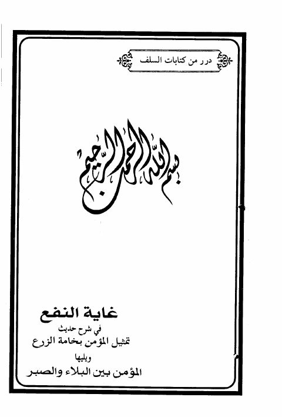

Downloads need an internet connection.
غاية النفع شرح حديث تمثل المؤمن بخامة الزرع ويليها المؤمن بين البلاء والصبر
Authors: ابن رجب الحنبلي
Editors: صبري بن سلامة شاهين
Publishers: دار الكتاب والسنة مكتبة دار الحميضي
**▫️ العنوان: غاية النفع شرح حديث تمثل المؤمن بخامة الزرع ويليها المؤمن بين البلاء والصبر** ▪️ المؤلف: #عبد_الرحمن_البغدادي_بن_رجب_الحنبلي ▫️ المحقق: #صبري_بن_سلامة_شاهين ▪️ الناشر: #دار_الكتاب_والسنة • #مكتبة_دار_الحميضي ▫️ تاريخ النشر: 1416هـ 1995م ▪️ بلد النشر: كراتشي، #باكستان • الرياض، #السعودية ▫️ الطبعة: 1 ▪️ عدد الأجزاء: 1 ▫️ الصفحات: 248 ▪️ نوع الوعاء: #كتاب ▫️ التصنيف الرئيسي: #الحديث_وعلومه ۪